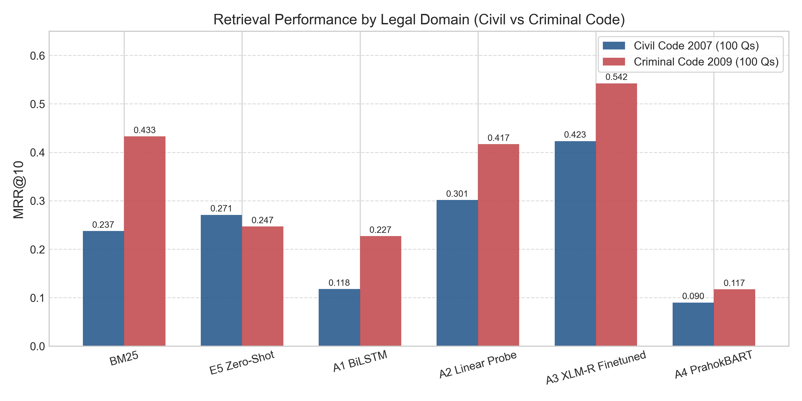

Finding the Right Law, in Khmer
Comparing Four Deep-Learning Retrievers on Cambodian Statutory Law & Citation-Grounded Assistant
Deep Learning Final Project (Individual Assessment — 50%) · Mengchheang Long
Department of Engineering · Bachelor of Software Engineering · Lecturer: Mr. Soklong HIM
10-Minute Presentation + 5-Minute Q&A (Course Syllabus §6.2 & §6.3)
1. Problem Definition & Practical Motivation
A citizen asks a question in plain Khmer — can deep learning retrieve the exact statutory article out of 1,976?
Task Definition (§5.A)
Input: Unstructured legal question in natural Khmer ($q$).
Output: Top-$k$ ranked statutory articles $\{d_1, \dots, d_k\}$ from the full 1,976-article corpus without statute/chapter filter hints.
«តើកិច្ចសន្យាបង្កើតឡើងដោយរបៀបណា?»
("How is a contract formed under the Civil Code?")
→ Ground Truth: Civil Code Art. 336 (ការបង្កើតកិច្ចសន្យា...) & Art. 311 (និយមន័យនៃកិច្ចសន្យា)
Why Lexical Keyword Search (BM25) Fails
- Severe Vocabulary Mismatch (57.5% of BM25 misses): Citizens ask in conversational phrasing; statutes use formal civil law terminology.
- Misleading Term Distraction: BM25 matches common query words like "របៀប" (manner) and retrieves irrelevant procedural articles (e.g., Art. 623 "Manner of dividing proceeds") while completely missing Art. 336.
- Dense Semantic Representation: Neural bi-encoders map queries and statutes into a shared latent geometry, bridging vocabulary discrepancies via contextual meaning.
2. Dataset & Preprocessing: The Limon Font Challenge
Official government PDFs were typed in legacy 1990s ASCII fonts — extraction had to be engineered from scratch
The Legacy Limon Problem
- Corpus Source: Official PDFs from Open Development Cambodia (Civil Code 2007: 1,304 articles, Criminal Code 2009: 672 articles).
- Obsolete ASCII Encoding: Text layer contains raw Latin keystrokes (e.g.
maRta 336>- karbegáItkic©snñ...). Standard PDF tools produce unreadable gibberish. - Visual Grapheme Inversion: Khmer pre-base vowels (េ ែ ៃ) and subscript consonants are typed *before* the base consonant visually, violating Unicode logical character ordering.
Engineered Solution & Validation
- Custom Pipeline: Engineered
LimonPdfExtractorwith byte-level font mapping and a finite-state machine for syllable reordering into Unicode. - 100% Consecutive Extraction: Cleanly extracted all 1,976 articles (Civil 1–1304, Criminal 1–672) with zero missing provisions, audited against physical gazettes.
- Structural Metadata: Preserved full hierarchical breadcrumbs (Book → Title → Chapter → Section → Article Number).
3. Training, Validation & Test Splits (Zero Leakage)
Rigorous split quarantine and data sanitization protocol enforced across all models (Seed 42)
Weak Supervision Data Generation
- Title-to-Body Pairs: Because labeled Khmer legal QA datasets do not exist, 1,472 unique article titles served as natural query-body training pairs.
- Ambiguous Titles Excluded: 270 articles sharing identical titles (e.g., "Definitions", "Competence") were quarantined to prevent ambiguous label noise.
- Passage Title Stripping: Titles were strictly removed from passages during training to prevent trivial lexical copy-matching.
Benchmark Splits & Leakage Guard (§5.A)
- Fixed Splits (Seed 42): 1,176 Train (80%) · 148 Validation (10%) · 148 Held-Out Test Titles (T-T Secondary Benchmark).
- Primary T-Q Benchmark: 200 authentic human legal questions (100 Civil + 100 Criminal).
- Zero Test Leakage: All 200 questions and their 261 relevant statutory articles were strictly quarantined from training. Test sets evaluated strictly once.
4. Model Architectures & Strategies
Comparing 4 distinct PyTorch deep learning approaches across model families and training strategies (§4)
| Approach | Encoder Architecture (Dim. A) | Training Strategy (Dim. B) | Trainable Params | Tokenization |
|---|---|---|---|---|
| BM25 | Sparse lexical inverted index (Baseline) | Frequency heuristics ($k_1=1.5, b=0.75$) | 0 | khmer-nltk CRF |
| E5 Zero-Shot | Pretrained multilingual transformer | Zero-shot inference (Frozen) | 0 (278M) | SentencePiece |
| A1 BiLSTM | Bidirectional LSTM (2 layers, hidden 256) | Trained from scratch (Random init) | 1.97 M | khmer-nltk CRF |
| A2 Linear Probe | multilingual-e5-base (XLM-RoBERTa) | Frozen backbone + trained linear head | 0.59 M | SentencePiece |
| A3 Full Fine-Tune ★ | multilingual-e5-base (XLM-RoBERTa) | Full fine-tuning (All 12 layers adapted) | 278.04 M | SentencePiece |
| A4 PrahokBART | prahokbart-base (Native Khmer seq2seq) | Full fine-tuning with mean-pooling | 35.83 M | SentencePiece (32k) |
Course Rubric Compliance (§4): Approaches differ in architecture (BiLSTM vs Transformer vs BART) AND training strategy (scratch vs linear probe vs fine-tuning), exceeding the 3-approach requirement.
5. Training Process & InfoNCE Contrastive Loss
Shared contrastive learning formulation with in-batch negatives and symmetric cross-entropy
Symmetric InfoNCE Objective
Both query-to-document and document-to-query contrastive losses are averaged across batch size $B$:
L = -1/(2B) * Σ [ log( e^(sim(q_i,d_i)/τ) / Σ_j e^(sim(q_i,d_j)/τ) ) + log( e^(sim(d_i,q_i)/τ) / Σ_j e^(sim(d_j,q_i)/τ) ) ]
- Temperature $\tau = 0.05$: Sharply penalizes hard negative false positives.
- In-Batch Negatives: $B-1$ negative articles per sample without mining overhead.
Optimization & Engineering Controls
- Optimizer: AdamW with linear warmup (10% of total steps) and cosine learning rate decay.
- Regularization: Weight decay (0.01) + embedding dropout + contrastive repulsion.
- Checkpointing (§5.B):
torch.savesaves model weights, optimizer, scheduler, and RNG state each epoch (last.pt,best.pt) with--resumeflag support.
6. Experimental Setup & Hyperparameter Tuning
Systematic hyperparameter search recorded across learning rates and weight decay on Tesla T4 GPU (§5.C)
Approach A3: 6-Run Grid Search (Tesla T4)
| Run Name | LR | WD | Best Epoch | Val MRR@10 |
|---|---|---|---|---|
| a3_lr2e-5_wd0.01 ★ | 2e-5 | 0.01 | 4 | 0.9095 |
| a3_lr2e-5_wd0.0 | 2e-5 | 0.00 | 4 | 0.9095 |
| a3_lr3e-5_wd0.0 | 3e-5 | 0.00 | 4 | 0.9082 |
| a3_lr3e-5_wd0.01 | 3e-5 | 0.01 | 4 | 0.9081 |
| a3_lr1e-5_wd0.01 | 1e-5 | 0.01 | 3 | 0.9023 |
| a3_lr1e-5_wd0.0 | 1e-5 | 0.00 | 3 | 0.9023 |
Controlled Environments & Other Models
- A1 BiLSTM Tuning: LR {1e-3, 3e-3} × Dropout {0.1, 0.3} → Best: LR 3e-3, Drop 0.3 (Val MRR: 0.7679).
- A2 Linear Probe Tuning: LR {1e-3, 1e-2} × WD {0, 0.01} → Best: LR 1e-3, WD 0.01 (Val MRR: 0.7894).
- A4 PrahokBART Tuning: LR {5e-5, 1e-4} × WD {0.01} → Best: LR 1e-4 (Val MRR: 0.6116).
- Reproducibility: Global seed 42 fixed across Python, NumPy, PyTorch, cuDNN.
7. Empirical Results & Overlaid Learning Curves
Evaluated on 200 real human legal questions across 1,976 articles — explained by capacity and transfer (§5.C)

| Model | Recall@1 | Recall@5 | MRR@10 | Hit@5 |
|---|---|---|---|---|
| A3 XLM-R Fine-Tuned ★ | 0.3375 | 0.5142 | 0.4827 | 57.0% |
| A2 XLM-R Linear Probe | 0.2400 | 0.4117 | 0.3591 | 47.5% |
| BM25 Baseline | 0.2025 | 0.4075 | 0.3350 | 47.0% |
| E5 Zero-Shot | 0.1625 | 0.2617 | 0.2588 | 32.0% |
| A1 BiLSTM | 0.0875 | 0.2025 | 0.1724 | 24.5% |
| A4 PrahokBART | 0.0525 | 0.1517 | 0.1035 | 18.0% |

A1 (scratch): Overfits severely (train loss → 0.02, val stalls). With only ~1.1k pairs, random embeddings fail to capture Khmer legal morphology.
A2 (frozen): Cannot overfit, but linear projection head hits an expressive capacity ceiling (ties BM25 at p = 0.9031).
A3 (fine-tuned): Adapts all 12 transformer layers, achieving statistically validated superiority (+44.1% MRR@10, p < 0.001).
8. Qualitative Error Analysis & Study Limitations
Categorizing failure modes on the 200 benchmark questions and measuring distribution shift (§5.C)
Error Taxonomy at k=5 (T-Q: 200 Questions)
| Model | Misses | Hit@5 | Vocab Mismatch | Multi-Article | Near-Miss |
|---|---|---|---|---|---|
| A3 XLM-R | 86 | 57.0% | 52 (60.5%) | 15 (17.4%) | 17 (19.8%) |
| A2 Linear Probe | 105 | 47.5% | 66 (62.9%) | 27 (25.7%) | 7 (6.7%) |
| BM25 Baseline | 106 | 47.0% | 61 (57.5%) | 26 (24.5%) | 15 (14.2%) |
| A1 BiLSTM | 151 | 24.5% | 79 (52.3%) | 37 (24.5%) | 19 (12.6%) |
| A4 PrahokBART | 164 | 18.0% | 96 (58.5%) | 44 (26.8%) | 8 (4.9%) |
Near-misses represent relevant articles correctly placed at rank 6–10.
Distribution Shift & Limitations (§5.D)
- In-Distribution (T-T: 97–99% Recall@5): On held-out title-to-body retrieval, performance is near ceiling because training pairs shared structural alignment.
- Out-of-Distribution (T-Q: 15–51% Recall@5): Human questions cause severe distribution shift due to colloquial phrasing, scenario narratives, and synonym variations.
- Study Limitations: Evaluated on Civil and Criminal Codes (1,976 articles); scanned labor law PDFs requiring OCR left for future work.
9. Citation-Grounded Prototype Demonstration
End-to-end RAG assistant running on localhost:8501 (PyTorch A3 Retriever + FastAPI + Streamlit + DeepSeek Flash)
Resolving The Semantic Mismatch
"តើកិច្ចសន្យាបង្កើតឡើងដោយរបៀបណា យោងតាមក្រមរដ្ឋប្បវេណី?"
BM25 matches "របៀប" → Art. 623 (Miss). A3 Neural maps semantic intent → Art. 311 (Rank 1, sim 0.61) & Art. 336 (Rank 2, sim 0.53)!
Anti-Hallucination Citation Guard
Generates grounded Khmer analysis with automated statutory verification tags matched against retrieved legal chunks:
Live Demonstration at localhost:8501
Streamlit UI running full PyTorch A3 encoder and automated benchmark comparison dashboard
10. Conclusions & Defense Summary
Three key takeaways, engineering rigor, and transition to Q&A (§6.2)
Pre-training is Indispensable: Models trained from scratch (BiLSTM) fail outright on small legal data (0.1724 MRR@10) due to vocabulary sparsity; multilingual pretraining provides necessary structural priors.
Full Fine-Tuning is Decisive: Adapting all transformer layers (A3) is strictly required to surpass keyword search on conversational legal queries (+44.1% relative MRR@10 over BM25, p < 0.001).
Reproducible Engineering: 100% consecutive Limon extraction (1,976 articles), zero test leakage, 136 passing automated unit tests, and GPL-3.0 open-source code.
A1. Paired Bootstrap Hypothesis Testing
10,000 bootstrap resamples on paired per-query score differences (Primary Benchmark T-Q: 200 Questions)
| Comparison | Metric | Mean A | Mean B | Difference (Δ) [95% CI] | p-value | Wins / Losses / Ties |
|---|---|---|---|---|---|---|
| A3 vs BM25 Baseline | Recall@5 | 0.5142 | 0.4075 | +0.1067 [+0.0500, +0.1633] | 0.0002 | 41W / 13L / 146T |
| A3 vs BM25 Baseline | MRR@10 | 0.4827 | 0.3350 | +0.1477 [+0.0962, +0.1993] | 0.0001 | 72W / 25L / 103T |
| A3 vs E5 Zero-Shot | MRR@10 | 0.4827 | 0.2588 | +0.2239 [+0.1685, +0.2787] | 0.0001 | 80W / 15L / 105T |
| A3 vs A1 BiLSTM | MRR@10 | 0.4827 | 0.1724 | +0.3103 [+0.2483, +0.3705] | 0.0001 | 104W / 13L / 83T |
| A3 vs A2 Linear Probe | MRR@10 | 0.4827 | 0.3591 | +0.1236 [+0.0796, +0.1697] | 0.0001 | 65W / 21L / 114T |
| A2 vs BM25 Baseline | Recall@5 | 0.4117 | 0.4075 | +0.0042 [-0.0567, +0.0625] | 0.9031 (n.s.) | 26W / 25L / 149T |
| A3 vs A4 PrahokBART | MRR@10 | 0.4827 | 0.1035 | +0.3792 [+0.3195, +0.4396] | 0.0001 | 116W / 6L / 78T |
| A4 vs BM25 Baseline | MRR@10 | 0.1035 | 0.3350 | -0.2315 [-0.2869, -0.1775] | 0.0001 | 12W / 90L / 98T |
Interpretation: A3's gain over BM25 is statistically significant ($p < 0.001$). A2 vs BM25 ($p = 0.9031$) proves statistical parity: frozen representations match keyword search but require fine-tuning to surpass it.
A2. Complete Empirical Benchmark Leaderboard
Primary (T-Q: 200 Questions) & Secondary (T-T: 148 Titles) with 95% Bootstrap Confidence Intervals
Primary Benchmark (T-Q: 200 Human Legal Questions)
| Model | Recall@1 [95% CI] | Recall@5 [95% CI] | MRR@10 [95% CI] | Hit@5 [95% CI] | Params | Hardware |
|---|---|---|---|---|---|---|
| A3 XLM-R Full FT ★ | 0.3375 [0.28, 0.40] | 0.5142 [0.45, 0.58] | 0.4827 [0.42, 0.55] | 57.0% [50, 64] | 278.04M | GPU (T4, fp32) |
| A2 XLM-R Linear Probe | 0.2400 [0.19, 0.30] | 0.4117 [0.35, 0.48] | 0.3591 [0.30, 0.42] | 47.5% [41, 54] | 0.59M | CPU (5.9s) |
| BM25 Baseline | 0.2025 [0.15, 0.25] | 0.4075 [0.35, 0.47] | 0.3350 [0.28, 0.39] | 47.0% [41, 54] | 0 | CPU (4ms) |
| E5 Zero-Shot | 0.1625 [0.12, 0.21] | 0.2617 [0.21, 0.32] | 0.2588 [0.20, 0.31] | 32.0% [26, 39] | 0 | CPU |
| A1 BiLSTM (scratch) | 0.0875 [0.05, 0.13] | 0.2025 [0.16, 0.25] | 0.1724 [0.13, 0.22] | 24.5% [19, 31] | 1.97M | CPU (2,035s) |
| A4 PrahokBART | 0.0525 [0.03, 0.09] | 0.1517 [0.11, 0.20] | 0.1035 [0.07, 0.14] | 18.0% [13, 24] | 35.83M | CPU (1,602s) |
Secondary Benchmark (T-T: 148 Held-Out Article Titles)
| Model | Recall@1 [95% CI] | Recall@5 [95% CI] | MRR@10 [95% CI] | Hit@5 [95% CI] |
|---|---|---|---|---|
| A3 XLM-R Full FT ★ | 0.9054 [0.85, 0.95] | 0.9932 [0.97, 1.00] | 0.9456 [0.92, 0.97] | 99.3% [97, 100] |
| BM25 Baseline | 0.7973 [0.74, 0.86] | 0.9730 [0.95, 0.99] | 0.8677 [0.82, 0.91] | 97.3% [95, 99] |
| A2 XLM-R Linear Probe | 0.7905 [0.72, 0.85] | 0.9392 [0.90, 0.97] | 0.8563 [0.81, 0.90] | 93.9% [90, 97] |
| A4 PrahokBART | 0.5946 [0.51, 0.68] | 0.8041 [0.74, 0.87] | 0.6733 [0.60, 0.74] | 80.4% [74, 87] |
| A1 BiLSTM (scratch) | 0.5135 [0.43, 0.60] | 0.7568 [0.70, 0.82] | 0.6242 [0.56, 0.69] | 75.7% [70, 82] |
| E5 Zero-Shot | 0.5405 [0.46, 0.61] | 0.7230 [0.65, 0.78] | 0.6235 [0.55, 0.69] | 72.3% [65, 78] |
A3. Per-Code Breakdown (Civil Code vs Criminal Code)
Evaluating performance separately on Civil Code (100 questions) and Criminal Code (100 questions)

| Model | Civil R@5 | Civil MRR | Criminal R@5 | Criminal MRR |
|---|---|---|---|---|
| A3 XLM-R | 45.8% | 0.4232 | 57.0% | 0.5422 |
| BM25 Baseline | 30.5% | 0.2374 | 51.0% | 0.4327 |
| A2 Linear Probe | 37.0% | 0.3015 | 45.3% | 0.4167 |
| A1 BiLSTM | 13.0% | 0.1177 | 27.5% | 0.2270 |
| A4 PrahokBART | 13.3% | 0.0898 | 17.0% | 0.1173 |
Key Insight: Criminal Code performance is systematically higher across models (+10% to +15% MRR) because criminal offenses have sharper conceptual boundaries (theft, homicide, forgery) compared to abstract civil contracts.
A4. Concrete Qualitative Failure Cases (from results/error_analysis/)
Four verified ground-truth query walkthroughs illustrating specific linguistic failure modes
1. Sub-Clause Specificity (A3 Rank 6)
«តើអ្នកលក់ត្រូវទទួលខុសត្រូវលើវិការៈកំបាំងនៃវត្ថុទិញដូរយ៉ាងដូចម្តេច?»
Latent defect in sales contract. Expected: Civil Code Art. 544.
A3 retrieves Art. 547 (Remedies for defect) at Rank 1, and Art. 544 at Rank 6 (near-miss).
2. Multi-Article Query Coverage
«តើប្រភេទនៃសិទ្ធិប្រត្យក្សមានអ្វីខ្លះនៅក្នុងក្រមរដ្ឋប្បវេណី?»
Classes of real rights. Expected: Civil Code Art. 130 & 131.
BM25 catches only 1 in top-5; A3 catches both at ranks 2 and 3.
3. Code Confusion (A1 Failure)
«តើច្បាប់ហាមឃាត់ការប្រើប្រាស់សិទ្ធិដោយបំពានយ៉ាងដូចម្តេច?»
Abuse of rights. Expected: Civil Code Art. 4.
A1 BiLSTM guesses Criminal Code Art. 579 (wrong statute!). A3 gets Art. 4 at Rank 1.
4. Exact Article Term Overlap (BM25 Win)
«តើអ្វីជាការការពារស្របច្បាប់?»
Legitimate self-defense. Expected: Criminal Code Art. 33.
Both BM25 and A3 achieve Rank 1 (100% Top-1) due to clean exact phrase match.